说明：修改生效规则/因子等对象自动触发双跑演练
一、背景
- 当规则、因子、决策等对象在场景配置中被生效引用时，直接修改其逻辑信息势必会影响线上生产，产生一定的风险：
- 例如，在登录场景中，一个规则在场景中生效，此时修改了规则的表达式，规则的执行结果会发生改变，预期应该命中给出拦截决策但实际未命中，此条流量没有被拦截，产生漏过情况。
- 为防止此类情况的出现，用户需要去双跑演练中创建演练任务，在演练环境中进行生效对象逻辑信息的修改，之后双跑、查看结果是否符合预期、申请上线，完成修改，详情见说明：策略演练使用说明；同时，当用户直接在页面上编辑生效对象时，会区分属性信息的编辑和逻辑信息的编辑，编辑逻辑信息时会自动触发双跑演练流程
二、名词解释
- 双跑演练：一种操作安全机制，用户可以在演练环境（非线上环境）进行指定对象逻辑信息的修改，通过线上同流量模拟执行情况，与线上执行情况进行对比
- 逻辑信息：对策略的执行过程及结果有影响的信息，例如， 表达式、变量名称（英文名称）、输出类型、场景配置的优先级、规则的决策等等
- 属性信息：与逻辑信息相对，对策略执行过程及结果无影响的信息，例如，共享业务方、规则因子标签等
- 未生效：在场景配置中处于未生效状态或者没有被生效对象引用
- 已生效：与未生效对应，在场景配置中处于生效状态或者已经被生效对象引用
三、操作指南
1.用户操作流程说明
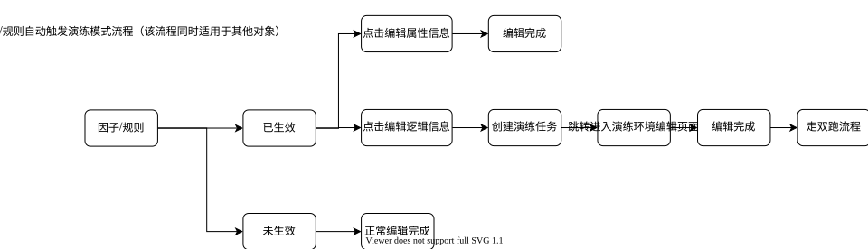
2.Quick Start
3.详细操作流程说明
Step1:进入需要编辑的的对象的详情页面
|
说明 |
页面 |
|---|---|
|
找到要编辑的对象，进入其详情页面 |
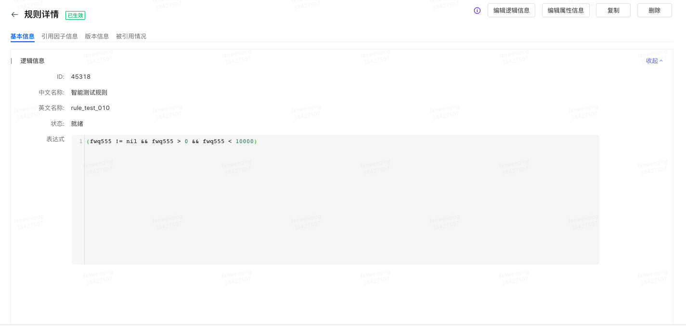 |
Step2.1: 编辑对象的生效状态为已生效时编辑属性信息
|
说明 |
页面 |
|---|---|
|
1.点击编辑属性信息 2.进入编辑属性信息页面，正常编辑属性信息，编辑完成 |
1. 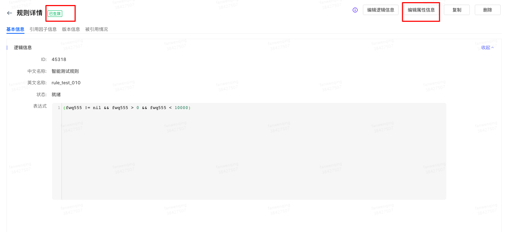 2. 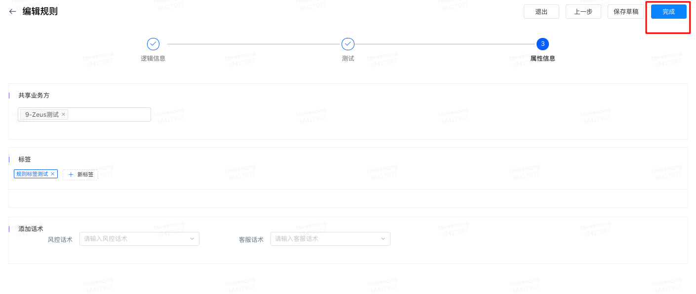 |
Step2.2: 编辑对象的生效状态为已生效时编辑逻辑信息
|
说明 |
页面 |
|---|---|
|
1.点击编辑逻辑信息 2.创建演练任务 3.进入演练环境编辑对象逻辑信息页面 4.编辑完成，查看变更内容 5.启动双跑（设置双跑流量和时间）或者退出演练环境 6.查看演练任务情况 说明：编辑完成没有启动双跑，而是退出演练环境，编辑中的修改还会保存在创建的演练任务中，何时想启动双跑何时可以去启动双跑 |
1. 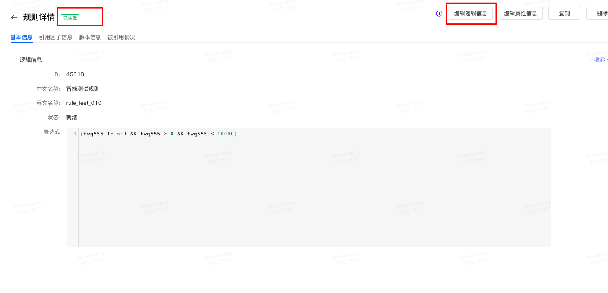 2. 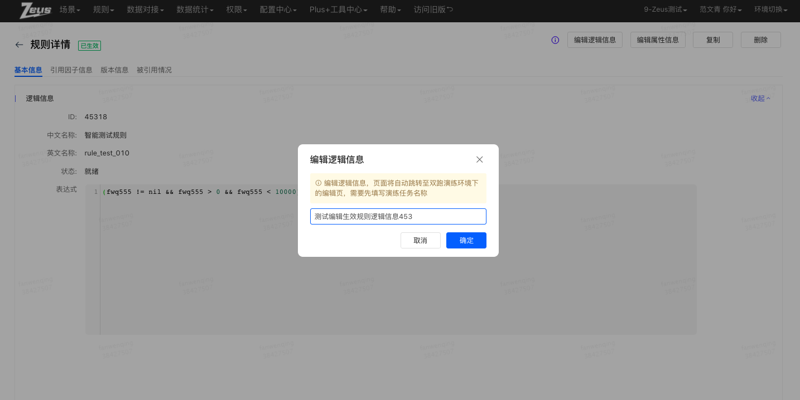 3. 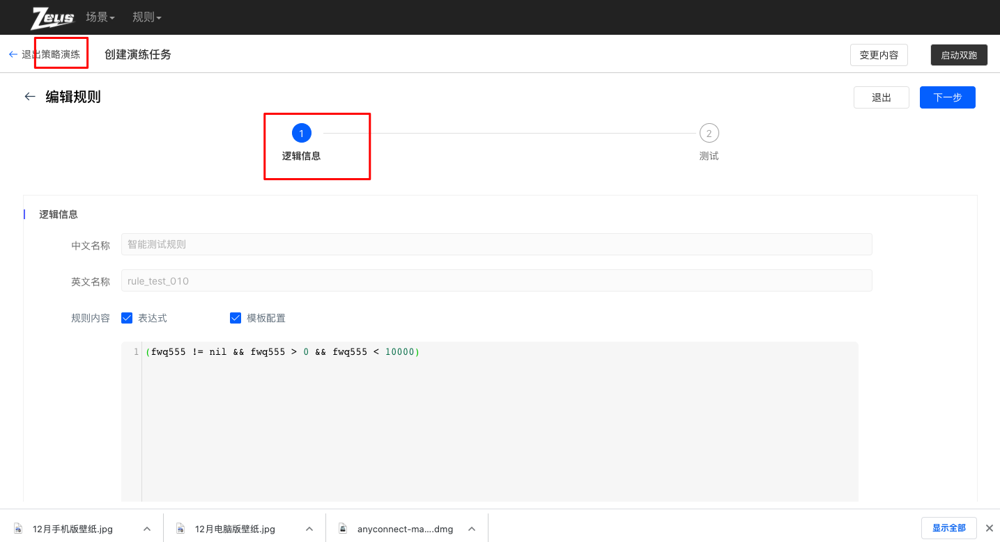 4. 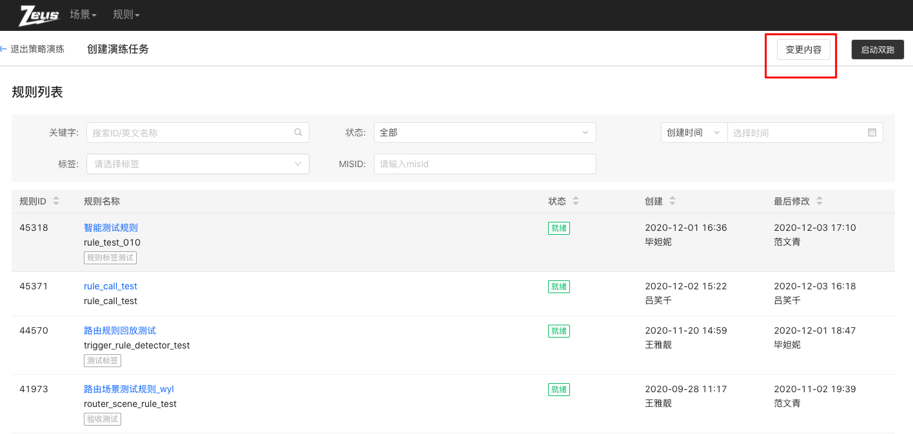 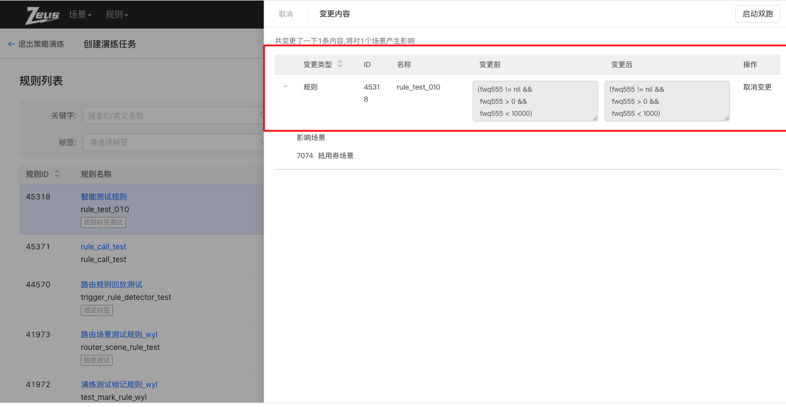 5. 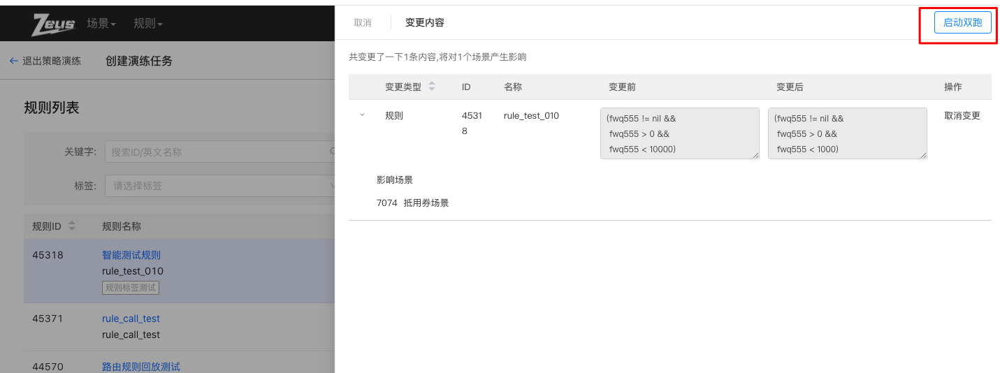 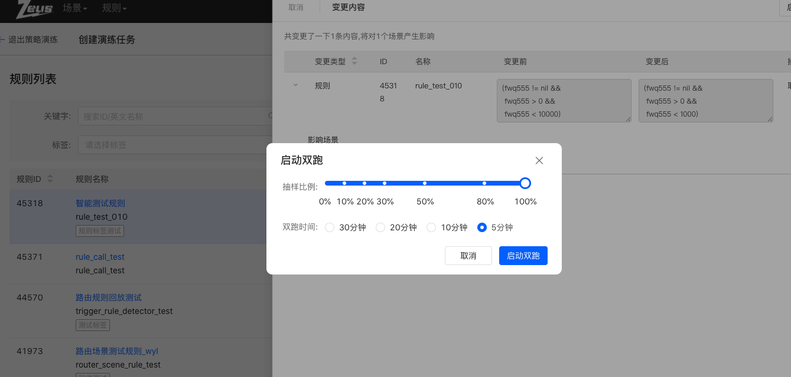 6. 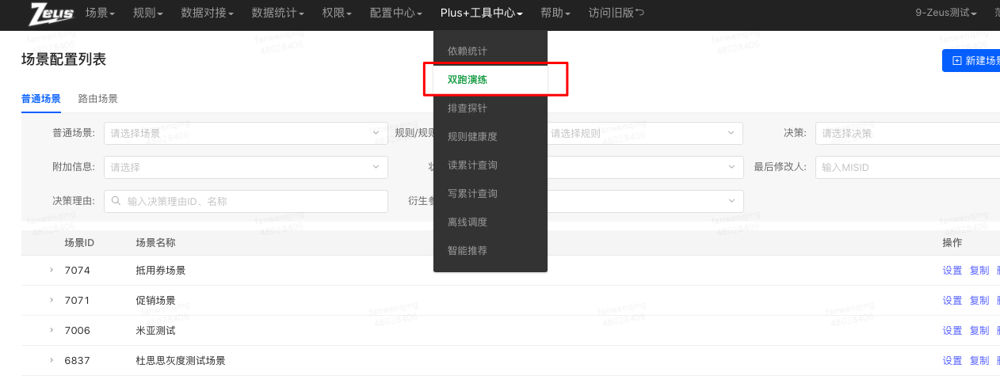 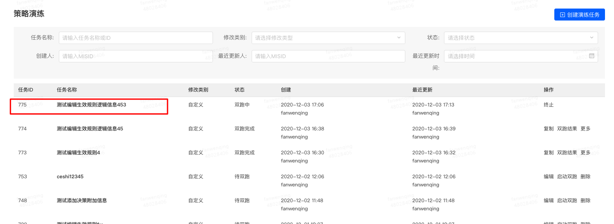 |
Step3: 编辑对象的生效状态为未生效时按照原来的流程正常编辑
四、FAQ
Q1：目前能够自动触发双跑演练的修改对象都有哪些？
--A：已经实现的对象有普通规则，因子的普通因子、扩展因子-名单库因子、扩展因子-名单库因子（上海侧）、决策表因子。后面在迭代中会陆续实现因子的累计因子、因子工具因子、离线引擎-个体因子、离线引擎-全局因子，规则组，普通场景配置，路由场景配置，决策，因子工具，路由规则，参数，数据接口
Q2：为什么我的决策是在场景配置中生效的，但是详情页面中却显示未生效呢？
--A：决策这一部分还未做区分已生效和未生效，无论是否生效，在详情页面都会显示未生效，先忽略，之后会在迭代中修复